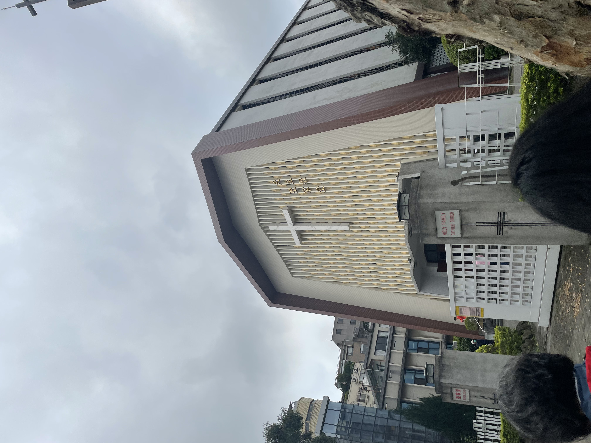

|
Kami mengunjungi Ren Ai Senior Citizen Home dengan teman - teman kami dari Sacred Heart. Disitu kami melakukan pertunjukan, dimana dari Santa Laurensia ada Ryu yang menyanyi dua lagu dan beberapa teman kami menampilkan drama, dan Aurel berinteraksi dengan opa oma disitu dengan bahasa mandarin. Saya melihat opa oma disitu sangat senang dalam mengikuti acara yang kami siapkan. Tujuan kunjungan tersebut adalah kami mau menyebarkan sukacita kepada opa oma. Cara kami mencapai tujuan tersebut adalah dengan melaksanakan tugas - tugas kami dengan senang hati. Tujuan kami sudah tercapai dengan baik, karena opa oma disitu sangat menikmati pertunjukan dan ice breaking yang kami sudah siapkan untuk opa oma. Tanggapan orang - orang yang menjadi sasaran dari kegiatan kami adalah opa oma sangat senang dan terhibur bisa ditemani oleh adik - adik. Selama mengikuti edutrip, ada hal - hal yang saya harus menjadi murid Yesus. Dimana saya menempatkan kebenaran dan kehendak Allah lebih tinggi daripada keinginan pribadi. Jadi saya selama perjalanan mengandalkan Yesus karena dia hadir dimana kami berada untuk menjaga kami. Saat kami mau terbang ke Taiwan dan pulang dari Taiwan saya berdoa supaya Yesus menjaga pesawat dan orang - orang yang ada disitu. Dalam edutrip saya mengalami hal - hal yang dimana saya harus memanggul salib. Saya harus siap menerima teman - teman saya, karena kami semua tidak ada orang tua jadi mereka bisa membutuhkan bantuan kami sama dengan mereka membantu saya. Lalu, saya juga harus membantu temen saya untuk mencari barang yang mereka inginkan dan setelah sudah selesai baru saya bisa mencari barang saya sendiri. Selama mengikuti edutrip saya dapat menyelesaikan semua masalah dan kesulitan dengan mengikuti Yesus, karena saya tahu jika saya datang kepadanya, ia akan membuka jalan dan membantu saya. Saat saya membutuhkan pertolongannya, saya berdoa dan tetap menjalankan hari itu dengan baik karena Yesus sudah membantu. Pada hari pertama paginya kami pergi ke gereja Holy Family Catholic Church bersama - sama dengan teman - teman yang pergi ke Hualien dan Kaoshiung. Saat saya melihat gereja tersebut saya melihat bahwa gerejanya berbeda dengan Santo Laurensius. Saat saya masuk kedalam gereja tersebut semuanya hening dan jika kami membuat suara kedengaran. Lalu, saat misa berlangsung saya merasa sangat damai. |
|---|
|  |
| Holy Family Catholic Church | Santo Laurensius |
|---|---|
| Misa bahasa inggris | Misa bahasa indonesia |
| Mazmur dicucapkan | Mazmur dinyanyikan |
| Lebih luas | Lebih memanjang |
| Tidak ada TTL | ada TTL |